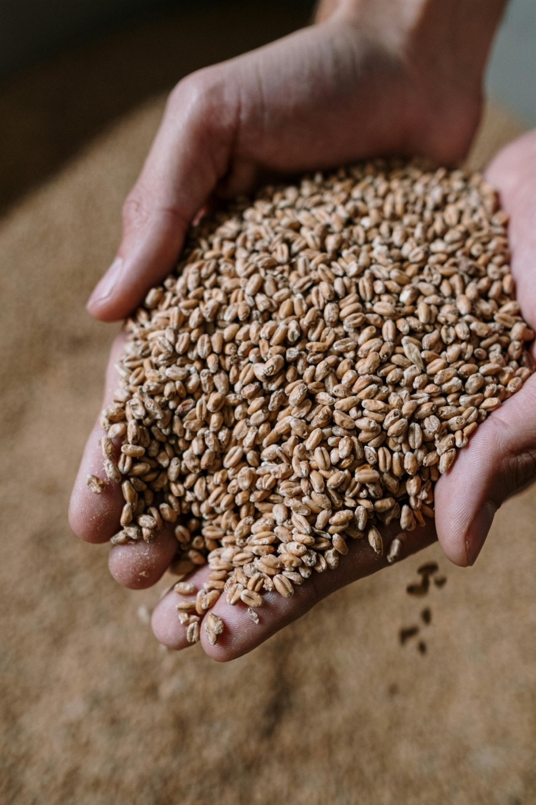

Quaderno di campagna digitale
Campi con superficie e località. Per ogni stagione cosa hai seminato, orzo o luppolo, con varietà, data ed ettari. La semente si scarica dal magazzino agricolo con il suo lotto.
Nuovo in 1.5 Modulo agricolo
Se coltivi orzo o luppolo, Fermento tiene insieme tutta la filiera: quaderno di campagna, trattamenti, raccolte, calibratura, maltazione e cotte. Ogni passaggio è un lotto collegato al precedente, così sai sempre da che campo arriva ogni birra.
Cosa fa
Sei fasi, dalla semina alla tracciabilità. Le stesse che vedi nella demo.
Campi con superficie e località. Per ogni stagione cosa hai seminato, orzo o luppolo, con varietà, data ed ettari. La semente si scarica dal magazzino agricolo con il suo lotto.
Concimazioni, trattamenti, lavorazioni e irrigazioni con prodotto, dose e operatore. Per i fitofarmaci Fermento calcola la fine della carenza e la controlla alla raccolta.
Orzo o luppolo grezzo entra in magazzino come lotto, collegato al campo e alla semina da cui viene. Se la data cade dentro un tempo di carenza, te lo dice prima di salvare.
Umidità, proteine e peso specifico del lotto, poi le frazioni per calibro. Le frazioni buone diventano lotti di orzo calibrato pronti per la malteria, lo scarto resta annotato.
Macerazione, germinazione, essiccazione in sei fasi fino al colpo di fuoco, post-essiccazione e test di laboratorio. All'uscita il malto entra in magazzino e vedi la resa.
Parti da una cotta, un lotto o un campo e vedi la catena a ritroso o in avanti: campo, trattamenti, raccolta, calibratura, maltazione, cotta, imballi, clienti. Esporti tutto in CSV.

Perché un gestionale per birrificio agricolo
Chi produce birra con orzo e luppolo coltivati in azienda oggi tiene il quaderno di campagna da una parte, i registri della malteria da un'altra e il magazzino del birrificio in un foglio Excel. Quando serve ricostruire da che campo arriva una cotta, si perde mezza giornata.
Con Fermento la filiera è un'unica catena di lotti:
E Bira, l'assistente AI di Fermento, legge anche la filiera: le chiedi «da che campo arriva il malto della cotta M-26-09?» e ti risponde con la catena completa.
Domande frequenti
Campi e semine, operazioni di campo come concimazioni, trattamenti, lavorazioni e irrigazioni, raccolte, analisi e calibratura dell'orzo, maltazione e tracciabilità completa dal campo alla bottiglia.
Sì. Per ogni trattamento Fermento calcola la fine del tempo di carenza e, quando registri la raccolta, controlla che sia rispettato. Se la data cade dentro la carenza te lo segnala prima di salvare.
Sì. Per ogni campo e stagione registri cosa hai seminato, orzo o luppolo, con varietà, data ed ettari. Ogni raccolta diventa un lotto in magazzino collegato al campo da cui viene.
No. Il modulo si accende da Impostazioni, Parametri, Moduli aggiuntivi. Se non ti serve resta spento e non lo vedi. Se lo spegni dopo averlo usato, i dati restano salvati.
Fermento Demo è la versione completa con dati di esempio, modulo agricolo compreso. Ti mando il link entro 24 ore.